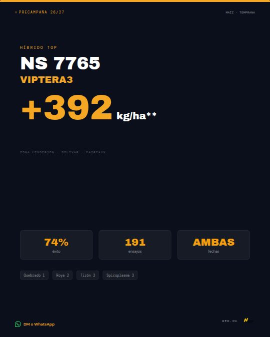

Tres meses sin publicar, justo en el cierre de la precampaña. Lo bueno: las próximas siete semanas son las de más decisiones en el lote. El maíz temprano se está sembrando, el girasol del oeste tiene su ventana óptima del 15/10 al 15/11 y el tardío se define ahora para diciembre.
Acá está el diagnóstico del repo, el plan semana por semana y 16 piezas listas (35 placas y 6 animaciones en MP4), cada una con su texto para copiar.
90 díassin publicar. Último posteo: reel de márgenes, 26/06.
2 de 14posteos armados en el repo llegaron a publicarse.
0métricas cargadas. No sabemos qué funcionó.
01 · Revisión completa del repo
Diagnóstico
Revisé la estrategia, la marca, el contexto, las 16 placas HTML, el laboratorio de maquetas, el dashboard y los 13 marbetes PDF, uno por uno. Todo lo que dice esta página está chequeado contra esos archivos.
Lo que está bien
La base de producto es seria. 13 marbetes oficiales cargados y fichas con fuente. Muy pocas reventas comunican así.
La voz de marca está clara: voseo, datos antes que adjetivos, cero precios en redes.
La estrategia de canales es la correcta: orgánico tranquilo y pauta segmentada con tope de frecuencia.
Las herramientas propias (calculadora de márgenes y suite financiera) son un diferencial que nadie más tiene en la zona.
El render automático HTML → JPG ya existía. Sobre esa base ahora también salen videos.
Lo que falló
La última milla. Se armaron 14 posteos y salieron 2. El cuello de botella nunca fue el diseño: fue aprobar, bajar y publicar.
Más herramientas internas que publicaciones. Dashboard, laboratorio de 20 maquetas, página para X, storyboard, calendario de efemérides… y el feed quieto desde el 26/06. Se pasaron el Día del Agricultor (8/9) y todo el tramo final de la precampaña.
Sin métricas no hay aprendizaje. El reel pautado en junio no tiene anotado el costo por conversación.
Siempre el mismo recurso: número naranja gigante. Sin fotos reales, sin caras, sin lote. Para una empresa que vende cercanía, es lo que más falta.
Errores encontrados
1 · Alta
La lista de precios y los descuentos están públicos en internet. Precios B1/B2/B3 por bolsa, descuentos apilables "hasta 35%" y un ejemplo de precio final por bolsa. El repo es público y el archivo se descarga sin login: rompe la regla dura número uno.brand/referencias/hibridos-nidera.md
Te toca decidir
2 · Alta
La fecha de siembra del girasol estaba mal cargada. Decía "óptima ago–sep, límite oct" para el oeste. El marbete dice 15/10 al 15/11, límite 20/11 (ago–sep es la fila de la región Norte). El error estaba en el contexto y se había copiado a otros 5 archivos, incluida la página pública de Nidera.contexto/productos-26-27.md
Corregido
3 · Alta
El mismo archivo de precios contradice a los marbetes. Pone al NS 1113 CL como alto oleico (no lo es: el alto oleico es el NS 1227 CL HO) y tiene madurez, GDU y tipo de grano distintos. Si una sesión futura lo lee, publica datos falsos.brand/referencias/hibridos-nidera.md
Marcado "no usar"
4 · Media
La placa W31 del NS 7765 tenía datos mal. Spiroplasma 3 (el marbete dice 5), "191 ensayos" (son comparaciones) y ningún logo de HenderSeeds.docs/placas/_archivo/2026-W31-gallery-hermes.html
Corregida y archivada
5 · Media
Textos de 13 a 20 px en placas de 1080. En el celular la placa se ve al 36%: esos textos quedan en 5 a 7 px. Ilegibles.placas W26, W27 y W31
Resuelto en el sistema nuevo
6 · Baja
Todo sigue rotulado "Precampaña 26/27". Hoy el productor está sembrando.placas y dashboard
Las piezas nuevas dicen "Siembra 26/27"
7 · Baja
El CTA se contradice entre archivos. CLAUDE.md dice "siempre WhatsApp" y GOAL.md dice "DM primero, WhatsApp chico".CLAUDE.md · GOAL.md
Unificado: DM en orgánico, botón de WhatsApp en pauta
8 · Baja
GitHub Pages publica desde una rama claude/…. Cada sesión trabaja en otra rama y lo nuevo no se ve online hasta mergear..github/workflows/pages.yml
Te toca: pasar a una rama main
Antes y después: la misma placa

Antes · W31
Maíz 26/27 · Temprana y tardía
NS 7765 VIPTERA3
Kilos por hectárea arriba del promedio de cada sitio de ensayo.
Siembra temprana
+392
kg/ha
74% éxito · 191 comp.
Tardía templada
+324
kg/ha
71% éxito · 165 comp.
El único del portafolio arriba de +300 kg/ha en las dos fechas.
Quebrado 1Roya 2MR 118
Ahora · W43
Logo de HenderSeeds arriba a la derecha, siempre. Nidera como sello, abajo.
Datos verificados contra el PDF del marbete: se fue el "Spiroplasma 3" y "ensayos" pasó a "comparaciones".
Un mensaje nuevo y comprobable: es el único del portafolio arriba de +300 kg/ha en temprana y en tardía.
Se lee en el celular: ningún texto por debajo de 19 px en el canvas; lo que hay que leer, desde 30 px.
Sin espacio muerto: la mitad vacía de la placa vieja ahora la ocupa el dato.
02 · Por qué ahora
El momento de la campaña
Dejamos de hablar de "precampaña" y hablamos de lo que el productor está decidiendo esta semana. Tres ventanas se pisan entre septiembre y diciembre.
Las fechas del girasol salen del marbete (fila "Oeste de Buenos Aires"). Las del maíz son aproximadas: en contexto/calendario-comercial.md figuran como [AJUSTAR].
03 · W40 → W46
Plan de 7 semanas
Tres posteos de feed por semana, un reel y algunas historias. Nada más en orgánico: el resto lo hace la pauta segmentada. Todo se programa de una vez en Meta Business Suite. Los horarios salen de la estrategia de canales: mate temprano (7–9 h), mediodía (12–14 h) y noche (20–22 h).
16 conceptos, 35 placas y 6 animaciones. Las animaciones se mueven acá mismo; el botón "Repetir" las vuelve a arrancar. Cada pieza trae el texto para copiar, el horario, si va con pauta y de dónde sale cada dato.
2026-W40 · Precampaña girasol → Técnica
Girasol · ventana óptima de siembra
lun 28/09 · 7–9 h
Es la pieza más útil y oportuna para volver: faltan ~3 semanas para que abra la ventana óptima del girasol en el oeste (15/10) y el dato viene directo del marbete. Se guarda y se comparte.
Siembra 26/27 · Girasol
Fecha óptima · Oeste de Buenos Aires
15/10 al15/11
NS 1113 CLNS 1115 CLNS 1117 CL
Fuente: marbetes oficiales Nidera 26/27 · región Oeste de Buenos Aires.
A · Franja de calendario (navy)La recomendada para feed. Dato enorme, se lee en 1 segundo.JPG feedJPG historiaHTML
Siembra 26/27 · Girasol
Marcá el almanaque.
Girasol en el oeste: fecha óptima del 15 de octubre al 15 de noviembre. Límite: 20 de noviembre.
Reel animado 9:16 · 10 sEl capítulo crece con el ángulo áureo real (137,5°) y aparece la ventana. Sirve para reel e historia.MP4JPG 9:16HTML
Texto para publicar
¿Cuándo va el girasol en el oeste? 🌻
Según el marbete Nidera, la fecha óptima de siembra para el Oeste de Buenos Aires va del 15 de octubre al 15 de noviembre. Fecha límite: 20 de noviembre.
Vale para los tres Clearfield que posicionamos en la zona: NS 1113, NS 1115 y NS 1117.
Faltan pocas semanas. Si todavía no definiste cuál va en cada lote, es el momento: mandanos un DM con tu zona y lo vemos.
📲 WhatsApp: wa.me/5492314530691
#Henderseeds #Nidera #Girasol2627 #Girasol #Henderson #Daireaux #Bolivar #OesteBonaerense
Texto del reel · vie 02/10
¿Cuándo va el girasol en el oeste? 🌻
Del 15/10 al 15/11, con fecha límite el 20/11. Lo dice el marbete Nidera para el Oeste de Buenos Aires.
Guardalo para la siembra. ¿Cuál va en tu lote? Mandanos un DM.
#Henderseeds #Nidera #Girasol2627 #Girasol #Henderson #Daireaux #Bolivar #OesteBonaerense
Texto de la placa · mié 11/11
Última semana de la ventana óptima del girasol en el oeste. 🌻
Según el marbete Nidera, la fecha óptima de siembra va hasta el 15/11 y la fecha límite es el 20/11. Si todavía te queda girasol por sembrar, es ahora.
Guardá el almanaque y, si tenés dudas con el híbrido para ese lote, mandanos un DM.
📲 WhatsApp: wa.me/5492314530691
#Henderseeds #Nidera #Girasol2627 #Girasol #Henderson #Daireaux #Bolivar #OesteBonaerense
Marbetes oficiales Nidera 26/27 de NS 1113 CL, NS 1115 CL y NS 1117 CL · tabla Fechas de siembra, fila Oeste de Buenos Aires: óptima 15/10 → 15/11, límite 20/11.
2026-W40 · Técnica & tecnología
Refugio · NS 7800 CLTG
jue 01/10 · 12–14 h
Arrancó la siembra de maíz temprano: es EL momento del refugio. Es contenido técnico que posiciona como asesor (no como vendedor de bolsas) y a la vez mueve un producto del portafolio que nunca comunicamos: el NS 7800 CLTG.
Maíz 26/27 · Técnica
Sin refugio, el VIPTERA3 dura menos.
Es lo que evita que las plagas se vuelvan resistentes. Nidera lo define como práctica indispensable para prolongar la vida útil de VIPTERA3.
El refugio del portafolioNS 7800 CLTG
MR 118 todas las zonas y ambientes
Marbete NS 7800 CLTG · Nidera 26/27 · 10% del área, en bloque o en franjas.
Placa feed 4:5El lote visto desde arriba: 1 de cada 10 plantas es refugio.JPG feedJPG historiaHTML
Maíz 26/27 · Técnica
¿Ya pensaste el refugio?
Sembrar VIPTERA3 sin refugio es gastar la tecnología antes de tiempo.
Tu lote, visto desde arriba
1 de cada 10 plantas: refugio.
Para eso está el NS 7800 CLTG: el refugio del portafolio, MR 118, todas las zonas y ambientes.
¿Lo planificamos juntos? Mandanos un DM.
Red.in · Distribuidor oficial
2314 53-0691
Reel animado 9:16 · 9 sEl lote se siembra planta por planta y se enciende la franja de refugio.MP4JPG 9:16HTML
Texto para publicar
Sin refugio, el VIPTERA3 dura menos. 🌽
El refugio es la parte del lote que se siembra con un maíz sin la tecnología Bt. Sirve para que las plagas no se vuelvan resistentes y la tecnología siga funcionando campaña tras campaña. Nidera lo define como una práctica indispensable para prolongar la vida útil de VIPTERA3.
La recomendación es sembrar el 10% del área con refugio, en bloque o en franjas.
El refugio del portafolio es el NS 7800 CLTG: madurez relativa 118, se posiciona en todas las zonas y ambientes.
📩 ¿Lo planificamos juntos? Mandanos un DM.
#Henderseeds #Nidera #Maiz2627 #Refugio #VIPTERA3 #BuenasPracticas #Henderson #Daireaux
Texto del reel · mié 04/11
¿Ya pensaste el refugio del tardío? 🌽
1 de cada 10 plantas: así se ve el refugio en el lote. Es lo que hace que VIPTERA3 siga funcionando campaña tras campaña.
El refugio del portafolio es el NS 7800 CLTG. ¿Lo planificamos juntos? Mandanos un DM.
#Henderseeds #Nidera #Maiz2627 #Refugio #VIPTERA3 #BuenasPracticas #Henderson #Daireaux
Pauta
No. Orgánico; es contenido de autoridad técnica.
Fuentes
Marbete NS 7800 CLTG (Nidera 26/27): 'práctica indispensable para prolongar la vida útil de la biotecnología VIPTERA3', MR 118, todas las zonas y ambientes. 10% del área: recomendación de manejo de resistencia para maíz Bt (ASA) — [VERIFICAR con Nidera la recomendación vigente antes de publicar].
2026-W40 · Institucional / cercanía
Institucional · Somos de acá
sáb 03/10 · 8–10 h (placa) · reel como historia fijada
Después de 3 meses sin publicar, conviene recordar quiénes somos y dónde estamos, con cifras que ya están aprobadas para contenido (100+ productores, 30.000+ ha bajo plan 25/26, cotización en menos de 24 h). El mapa usa coordenadas reales: los de la zona lo reconocen enseguida.
Reel animado 9:16 · 8 sCaen los tres pines, se dibujan las rutas y cuentan las cifras.MP4JPG 9:16HTML
Texto para publicar
Somos de acá. 📍
Henderson, Daireaux y Bolívar: recorremos los lotes de la zona, posicionamos cada híbrido según el ambiente y después de la siembra volvemos a ver cómo quedó la implantación.
Distribuidor oficial RED.IN de Nidera Semillas. Más de 100 productores y más de 30.000 hectáreas bajo plan en la 25/26. Cotización en menos de 24 horas.
📩 Pasá por la oficina en Henderson o mandanos un DM.
#Henderseeds #Nidera #REDIN #Henderson #Daireaux #Bolivar #OesteBonaerense #Agro
Pauta
Sí, liviana y siempre prendida en la zona (objetivo Alcance, tope 1 c/7 días): es la pieza de 'presentación' para quien no nos conoce.
Fuentes
contexto/empresa.md (cifras destacadas aprobadas para contenido). Mapa: coordenadas reales de Henderson (36°18'S 61°43'O), Daireaux (36°36'S 61°45'O) y Bolívar (36°14'S 61°06'O), 10 px = 1 km.
2026-W40 → W42 · Interacción (stories)
Historias interactivas · encuestas, preguntas y cuenta regresiva
una por semana, entre posteos (ver cada una)
Las historias con sticker (encuesta, preguntas, cuenta regresiva) son la forma más barata de volver a aparecer sin saturar el feed y le enseñan al algoritmo que la cuenta genera respuesta. Además, cada respuesta es una excusa para abrir una conversación por DM.
Encuesta · Girasol 26/27
¿Cuándo arrancás con el girasol?
En el oeste, la fecha óptima va del 15/10 al 15/11.
Encuesta
Red.in Nidera
H1 · Encuesta girasol (W40)Sticker de encuesta en el recuadro.JPG 9:16HTML
Encuesta · Maíz tardío
¿Ya definiste el maíz para el tardío?
Si todavía no, te ayudamos a elegirlo lote por lote.
Encuesta
Red.in Nidera
H2 · Encuesta tardío (W41)Escribí por DM a los que respondan 'Todavía no'.JPG 9:16HTML
Preguntas · Girasol 26/27
Preguntanos lo que quieras del girasol.
Híbridos, fecha, densidad, sanidad. Respondemos las mejores acá.
Caja de preguntas
Red.in Nidera
H3 · Caja de preguntas (W41)Sticker de preguntas en el recuadro.JPG 9:16HTML
Girasol · Oeste de Buenos Aires
Se abre la ventana.
15/10arranca la fecha óptima de siembra
Cuenta regresiva
Marbetes Nidera 26/27
H4 · Cuenta regresiva (W42)Sticker de cuenta regresiva al 15/10.JPG 9:16HTML
Texto para publicar
Historias (sin caption). Poné el sticker de Instagram en el recuadro punteado:
• H1 · Encuesta — '¿Cuándo arrancás con el girasol?' → opciones: 'Antes del 15/10' / 'En la ventana'.
• H2 · Encuesta — '¿Ya definiste el maíz para el tardío?' → 'Sí, ya está' / 'Todavía no'. A los que respondan 'Todavía no', escribiles por DM.
• H3 · Preguntas — 'Preguntanos lo que quieras del girasol 26/27'. Respondé las mejores en otra historia.
• H4 · Cuenta regresiva — 'Ventana óptima del girasol' → fecha 15/10 00:00. La gente se suscribe y le llega el aviso.
Pauta
No.
Fuentes
Fecha óptima del girasol en el oeste: marbetes Nidera 26/27 (15/10 al 15/11, límite 20/11).
2026-W41 · Precampaña girasol
Girasol · ¿cuál va en tu lote? (carrusel)
mar 06/10 · 20–22 h
Reemplaza al carrusel W26 con un posicionamiento más honesto: 1115 y 1117 tienen el mismo perfil sanitario en el marbete, así que la decisión real es techo (1113) o sanidad (1115/1117). La tabla final es para guardar: los carruseles útiles se guardan y el algoritmo lo premia.
Girasol 26/27: ¿cuál va en tu lote? 🌻
No hay un girasol mejor. Hay uno mejor para cada lote. Y la primera pregunta es simple: ¿qué te complicó en los últimos girasoles?
→ Si la sanidad no fue problema, buscá techo: NS 1113 CL (+2,11 qq/ha sobre el promedio de cada sitio en Sur+Oeste, 74% de éxito).
→ Si Phomopsis o Verticilium te sacaron kilos, priorizá sanidad: NS 1115 CL o NS 1117 CL (Phomopsis 2 en la escala Nidera).
Deslizá hasta la tabla y guardala para la siembra. Fecha óptima en el oeste: 15/10 al 15/11.
📩 Mandanos un DM con tu lote y lo posicionamos juntos.
#Henderseeds #Nidera #Girasol2627 #Girasol #Clearfield #Henderson #Daireaux #Bolivar
Pauta
No hace falta. Si rinde bien orgánico (guardados), se pauta la slide 5 sola en la semana del 15/10.
mié 07/10 · 20–22 h (placa) · historia con link el mismo día
Es la pregunta de estas semanas: el lote que todavía no está definido va a maíz o a girasol. La calculadora es el diferencial que ninguna otra reventa tiene y la comparación lado a lado es justo lo que hace. No mostramos números inventados: los signos de pregunta invitan a poner los propios.
Herramientas Henderseeds
¿Maíz o girasol en ese lote?
Cargá tus números y compará el margen por hectárea de los dos, lado a lado.
Historia animada 9:16 · 8 sLos números giran como odómetro y caen en '?'. Poné el sticker de link en el recuadro punteado.MP4JPG 9:16HTML
Texto para publicar
¿Maíz o girasol en ese lote? 🌽🌻
La respuesta no está en una placa: está en tus números. Con la calculadora de márgenes cargás alquiler, labores, insumos, flete y precio, y te devuelve el margen por hectárea de los dos cultivos, lado a lado.
Sin registro, desde el celular, en dos minutos.
📲 margen.henderseeds.com (link en la bio)
📩 ¿Preferís que lo hagamos juntos? Mandanos tus números por DM.
#Henderseeds #MargenesAgricolas #Maiz2627 #Girasol2627 #Herramientas #Henderson #Daireaux #Bolivar
Pauta
Sí, en la historia con link (objetivo Tráfico a margen.henderseeds.com con UTM), 5 días. Quien entra a la calculadora pasa a ser público tibio para retargeting.
Fuentes
Herramienta propia: margen.henderseeds.com (contexto/herramientas.md). UTM sugerido para el link: ?utm_source=instagram&utm_medium=historia&utm_campaign=siembra2627
2026-W41 · Precampaña maíz
Maíz tardío · el ranking del marbete
jue 08/10 · 12–14 h (placa) · reel dom 11/10 · 20–22 h
En el oeste el tardío pesa mucho y la decisión de híbrido se toma en octubre–noviembre para sembrar en diciembre. Es la comparación que el productor quiere ver y nadie le arma: 5 híbridos, un mismo criterio, dato oficial. Se muestran solo los que tienen diferencia significativa en tardía (honestidad técnica).
Siembra 26/27 · Maíz tardío
Maíz tardío: lo que dicen los marbetes.
Kilos por hectárea arriba del promedio de cada sitio de ensayo · siembra tardía templada.
NS 7765 VIPTERA371% éxito · 165 comp.
+324kg/ha
NS 7925 VIPTERA3Nuevo59% · 120 comp.
+228
NS 7852 VIPTERA3Nuevo62% · 120 comp.
+194
NS 7921 VIPTERA3 CL60% · 364 comp.
+179
NS 7624 VIPTERA3 CL60% · 222 comp.
+163
Todas con diferencia significativa (**). Marbetes oficiales Nidera 26/27. No es promesa de rinde: manda el ambiente y el manejo.
Placa feed 4:5Ranking con una sola barra destacada (la historia es el 7765).JPG feedJPG historiaHTML
Siembra 26/27 · Maíz tardío
¿Qué maíz sembrás en diciembre?
Lo que dicen 5 marbetes Nidera, con el mismo criterio.
Siembra tardía templada
Kilos arriba del promedio.
Diferencia contra el promedio de cada sitio de ensayo.
NS 776571% éxito
+324
NS 7925Nuevo59% éxito
+228
NS 7852Nuevo62% éxito
+194
NS 7921 CL60% éxito
+179
NS 7624 CL60% éxito
+163
kg/ha · todas significativas (**) · marbetes Nidera 26/27
¿Cuál va en tu lote tardío? Mandanos un DM.
Red.in · Distribuidor oficial
2314 53-0691
Reel animado 9:16 · 12 sLas barras crecen de a una con contador. Es la pieza para pautar.MP4JPG 9:16HTML
Texto para publicar
¿Qué maíz sembrás en diciembre? 🌽
Juntamos los datos de siembra tardía templada de los marbetes Nidera 26/27. Es la diferencia de rinde contra el promedio de cada sitio de ensayo:
NS 7765 VIPTERA3 · +324 kg/ha (71% de éxito)
NS 7925 VIPTERA3 · +228 kg/ha (lanzamiento)
NS 7852 VIPTERA3 · +194 kg/ha (lanzamiento)
NS 7921 VIPTERA3 CL · +179 kg/ha
NS 7624 VIPTERA3 CL · +163 kg/ha
Todas diferencias significativas. No es promesa de rinde: el ambiente y el manejo mandan. Por eso el híbrido se elige lote por lote.
📩 Mandanos un DM con tu lote tardío y lo vemos.
#Henderseeds #Nidera #Maiz2627 #MaizTardio #VIPTERA3 #Henderson #Daireaux #Bolivar
Texto del reel · dom 11/10
5 marbetes, un mismo criterio: así rinden en siembra tardía. 🌽
Kilos por hectárea arriba del promedio de cada sitio de ensayo, según los marbetes Nidera 26/27. Todas diferencias significativas.
¿Cuál va en tu lote tardío? Mandanos un DM y lo vemos.
#Henderseeds #Nidera #Maiz2627 #MaizTardio #VIPTERA3 #Henderson #Daireaux #Bolivar
Texto del reel · jue 12/11
Diciembre se define en noviembre. 🌽
Si vas a sembrar maíz tardío, este es el momento de elegir el híbrido para cada lote. Los marbetes Nidera 26/27 dicen esto en siembra tardía templada (kg/ha sobre el promedio de cada sitio):
NS 7765 · +324 · NS 7925 · +228 · NS 7852 · +194 · NS 7921 CL · +179 · NS 7624 CL · +163
El ambiente y el manejo mandan: por eso lo vemos lote por lote.
📩 Mandanos un DM con tu lote tardío.
#Henderseeds #Nidera #Maiz2627 #MaizTardio #VIPTERA3 #Henderson #Daireaux #Bolivar
Pauta
Sí: el REEL es la mejor pieza para pautar del lote. 7 días, objetivo Mensajes (WhatsApp), zona 50 km, tope 1 c/3 días. Arrancar con presupuesto de prueba y escalar solo si el costo por mensaje cierra.
Después de la campaña de la chicharrita, el Spiroplasma es una de las primeras preguntas del tardío. NS 7925 es lanzamiento y tiene el mejor puntaje del portafolio (3 en la escala 1–9 de Nidera). Lo mostramos contra el resto del portafolio, sin exagerar: el híbrido suma, el manejo manda.
Lanzamiento 26/27 · Maíz tardío
NS 7925: el mejor Spiroplasma del portafolio.
+228kg/ha en tardía templada 59% éxito · 120 comparaciones
Spiroplasma es el achaparramiento que transmite la chicharrita. El híbrido suma; el manejo integrado sigue siendo la base.
Placa feed 4:5Cada punto es un maíz del portafolio en la escala del marbete.JPG feedJPG historiaHTML
Maíz tardío · Chicharrita
Mirá este número.
3
Spiroplasma · escala del marbete
NS 7925: el mejor del portafolio.
+228kg/ha en tardía templada 59% éxito · 120 comp.
¿Tu tardío necesita este perfil? Mandanos un DM.
Lanzamiento Nidera 26/27
2314 53-0691
Reel animado 9:16 · 10 sArranca con un 3 gigante: frena el scroll.MP4JPG 9:16HTML
Texto para publicar
Tardío y chicharrita: mirá este número. 🌽
En el marbete Nidera, el comportamiento a Spiroplasma se puntúa del 1 (excelente) al 9 (deficiente). El NS 7925 VIPTERA3, lanzamiento 26/27, tiene 3: el mejor del portafolio de maíz (el resto va de 4 a 6).
Y rinde: +228 kg/ha sobre el promedio de cada sitio en siembra tardía templada (59% de éxito, 120 comparaciones).
Ojo: Spiroplasma es el achaparramiento que transmite la chicharrita. El híbrido es una herramienta más; monitoreo, fecha y manejo siguen siendo la base.
📩 ¿Tu tardío necesita este perfil? Mandanos un DM.
#Henderseeds #Nidera #Maiz2627 #MaizTardio #NS7925 #Chicharrita #Henderson #Bolivar
Texto del reel · jue 22/10
Tardío y chicharrita: mirá este número. 🌽
Spiroplasma 3 en la escala del marbete Nidera (1 es excelente, 9 deficiente): el mejor puntaje del portafolio de maíz. Es el NS 7925 VIPTERA3, lanzamiento 26/27.
El híbrido suma; el manejo integrado sigue siendo la base. ¿Lo vemos para tu lote? Mandanos un DM.
#Henderseeds #Nidera #Maiz2627 #MaizTardio #NS7925 #Chicharrita #Henderson #Bolivar
Pauta
Opcional: si el reel del ranking funcionó, este es el segundo para pautar (mismo público, excluyendo a quienes ya escribieron).
Contenido educativo que se guarda y se comparte, sin un solo número comercial. Explica la cuenta que la calculadora hace sola y deja la puerta abierta a 'hagámoslo con tus números'.
Márgenes 26/27
El número que tenés que saber antes de sembrar.
Costos totalesUSD / ha
÷
Precio neto del granoUSD / qq
=
Rinde de indiferenciaqq / ha
Es el rinde que necesitás para cubrir todos los costos. Si tu rinde esperado no lo supera con aire, el planteo no cierra.
La calculadora lo hace sola → margen.henderseeds.com
El número que tenés que saber antes de sembrar: tu rinde de indiferencia. 📈
Es el rinde que necesitás para cubrir todos los costos del planteo. La cuenta es simple:
Costos totales (USD/ha) ÷ precio neto del grano (USD/qq) = rinde de indiferencia (qq/ha)
Si tu rinde esperado no lo supera con aire, el planteo no cierra. Y ese número cambia con cada lote: alquiler, flete y labores no son iguales en todos lados.
La calculadora lo hace sola, sin registro: margen.henderseeds.com (link en la bio).
📩 ¿Lo hacemos con tus números? Mandanos un DM.
#Henderseeds #MargenesAgricolas #RindeDeIndiferencia #Maiz2627 #Girasol2627 #Henderson #Daireaux #Bolivar
Pauta
No.
Fuentes
Definición estándar de rinde de indiferencia (costos directos totales ÷ precio neto). Herramienta: margen.henderseeds.com.
2026-W42 · Institucional / cercanía
Efeméride · Día de la Madre (dom 18/10)
dom 18/10 · 8–10 h · feed + historia
Está marcada como prioridad alta en el calendario de fechas. Es presencia de marca sin venta: el capítulo de girasol funciona como 'flor' y conecta con el cultivo. El texto evita estereotipos (también manejan la sembradora y llevan los números).
A las madres del campo. 🌻
A las que madrugan antes que el sol, a las que llevan los números, a las que manejan la sembradora y a las que siempre tienen el mate listo.
Feliz día. De parte de todo el equipo de HenderSeeds.
#Henderseeds #DiaDeLaMadre #MujeresRurales #Campo #Henderson #Daireaux #Bolivar
Pauta
No. Sin CTA comercial.
Fuentes
Efeméride: Día de la Madre en Argentina, tercer domingo de octubre (18/10/2026).
2026-W43 · Precampaña maíz
NS 7765 · el único arriba de +300 en las dos fechas
lun 19/10 · 7–9 h
Rehace la placa W31 del 7765 corrigiendo sus errores (tenía Spiroplasma 3 cuando el marbete dice 5, hablaba de 'ensayos' en vez de comparaciones y no tenía el logo de Henderseeds). Suma un dato nuevo y verificable: es el único híbrido del portafolio con más de +300 kg/ha en temprana Y en tardía.
Maíz 26/27 · Temprana y tardía
NS 7765 VIPTERA3
Kilos por hectárea arriba del promedio de cada sitio de ensayo.
Siembra temprana
+392
kg/ha
74% éxito · 191 comp.
Tardía templada
+324
kg/ha
71% éxito · 165 comp.
El único del portafolio arriba de +300 kg/ha en las dos fechas.
Quebrado 1Roya 2MR 118
Placa feed 4:5Versión corregida de la placa W31 (ver 'antes y después' en el diagnóstico).JPG feedJPG historiaHTML
Texto para publicar
El único del portafolio arriba de +300 kg/ha en las dos fechas. 🌽
NS 7765 VIPTERA3:
→ Temprana: +392 kg/ha sobre el promedio de cada sitio (74% de éxito, 191 comparaciones)
→ Tardía templada: +324 kg/ha (71% de éxito, 165 comparaciones)
Y Quebrado 1 en la escala Nidera: no se te cae.
Por eso va en los mejores lotes, se siembre en septiembre o en diciembre.
📩 Mandanos un DM y lo posicionamos en tu campo.
#Henderseeds #Nidera #Maiz2627 #NS7765 #VIPTERA3 #MaizTardio #Henderson #Daireaux
Pauta
Opcional, como variante del reel del ranking (misma audiencia).
Fuentes
Marbete NS 7765 VIPTERA3 (Nidera 26/27): temprana +392** (74%, 191 comp.), tardía templada +324** (71%, 165 comp.), Quebrado 1, Roya 2, MR 118. Comparación con el resto de los marbetes: ningún otro supera +300 en ambas fechas (NS 7852: +316 temprana / +194 tardía).
2026-W43 · Técnica / institucional
Servicio · verificación de implantación
mié 21/10 · 7–9 h
Con el maíz temprano nacido, es el momento de mostrar el servicio que nos diferencia de 'vender bolsas': volver al lote después de la siembra. Contenido de asesor, no de vendedor, y un CTA concreto (pedir la recorrida).
Asesoramiento técnico
Ya sembraste. ¿Cuántas plantas lograste?
Después de la siembra recorremos el lote y verificamos la implantación: plantas logradas, fallas y dobles. Es el primer dato real de cómo arrancó tu cultivo.
Plantas por metro de surco plantas por hectárea
Placa feed 4:5Ideal combinarla con 1–3 fotos reales de una recorrida (carrusel).JPG feedJPG historiaHTML
Texto para publicar
Ya sembraste. ¿Cuántas plantas lograste? 🌱
Después de la siembra recorremos el lote y verificamos la implantación: plantas logradas, fallas y dobles. Contamos plantas por metro de surco y lo llevamos a plantas por hectárea.
Es el primer dato real de cómo arrancó tu cultivo, y el que después explica buena parte del rinde.
📩 Pedí la recorrida: mandanos un DM con tu zona.
#Henderseeds #Nidera #Maiz2627 #Siembra2627 #Agronomia #Henderson #Daireaux #Bolivar
Pauta
No. Si hay fotos reales de una recorrida, sumar una segunda imagen al posteo (carrusel foto + placa).
Fuentes
Servicio de verificación de implantación: contexto/empresa.md (asesoramiento técnico). Ilustración esquemática: 2 m de surco, una planta cada 25 cm.
2026-W44 · Herramientas (suite financiera)
Finanzas · ¿pesos o dólares?
mar 27/10 · 12–14 h
En siembra se financian insumos y labores. La herramienta de pesos vs. dólares responde una pregunta real y el CTA 'pedinos el link' abre conversaciones (que es la métrica que manda), en vez de mandar a un link largo.
Herramientas · Finanzas
¿Pesos o dólares? Hacé la cuenta antes de firmar.
Financiar en
$
Tasa en pesos
Devaluación que esperás
Financiar en
USD
Tasa en dólares
Plazo
Costo real en dólares? %
La herramienta compara las dos opciones con la devaluación que vos esperás y te devuelve el costo financiero total en USD.
¿Financiar en pesos o en dólares? 💵
Depende de la tasa y de cuánto esperás que se mueva el dólar. Esa cuenta tiene trampa si la hacés a ojo.
Nuestra herramienta compara las dos opciones con la devaluación que vos esperás y te devuelve el costo financiero total en dólares. Así comparás peras con peras.
📩 Pedinos el link por DM y, si querés, la corremos juntos con tu caso.
#Henderseeds #FinanzasAgro #Campaña2627 #Herramientas #Henderson #Daireaux #Bolivar #AgroArgentino
Pauta
No. Si genera DMs, repetir el formato con la calculadora de cuotas y cheques.
Fuentes
Herramienta propia: 13-finanzas-suite.vercel.app/finanzas (contexto/herramientas.md) — compara financiación en pesos vs. USD ajustando por devaluación esperada y devuelve CFTEA en USD.
2026-W44 · Técnica & tecnología
Educativo · cómo leer un marbete (carrusel)
jue 29/10 · 20–22 h
Todo lo que publicamos sale del marbete, pero casi nadie sabe leerlo. Enseñarlo nos posiciona como el asesor que explica (no el que vende) y hace más creíbles todos los demás posteos. Es el tipo de carrusel que se guarda y se reenvía por WhatsApp.
Es cuántos kilos por hectárea rindió arriba del promedio de cada sitio de ensayo (el "índice ambiental"). Positivo: rindió más que el promedio. Negativo: menos.
En girasol se mide en qq/ha: el NS 1113 CL marca +2,11 en Sur + Oeste.
Cómo leer un marbete en 30 segundos. 📄
Todos los datos que publicamos salen de los marbetes oficiales de Nidera. Así se leen:
① Diferencia de rinde: cuántos kg/ha (o qq/ha) rindió arriba o abajo del promedio de cada sitio de ensayo.
② Éxito y comparaciones: en qué porcentaje de las comparaciones superó ese promedio, y cuántas veces se midió.
③ ** y DNS: si la diferencia es estadísticamente significativa o no.
④ Sanidad: escala del 1 (excelente) al 9 (deficiente); R es resistencia genética.
Guardalo para cuando compares híbridos.
📩 ¿Leemos juntos el del híbrido que tenés en mente? Mandanos un DM.
#Henderseeds #Nidera #Maiz2627 #Girasol2627 #Agronomia #Henderson #Daireaux #Bolivar
Pauta
No. Fijarlo en el perfil (uno de los 3 posteos fijados).
Fuentes
Estructura de los marbetes oficiales Nidera 26/27 (bloques 'Resultados de ensayo a campo vs. índice ambiental', 'Perfil sanitario y agronómico 1 – excelente / 9 – deficiente, R – resistencia genética'). Ejemplos reales: NS 7765 (+392**, 74%, 191 comp.) y NS 7818 en tardía templada (−39 DNS).
2026-W45 · Precampaña maíz
NS 7624 VIPTERA3 CL · tardío con malezas
lun 02/11 · 7–9 h
Tercer ángulo del tardío (después del ranking y del Spiroplasma): el lote sucio. El 7624 CL es ciclo corto con tres herramientas herbicidas; es un problema concreto con una respuesta concreta.
Maíz tardío · Lotes sucios
Tardío con malezas difíciles.
NS 7624 VIPTERA3 CL · ciclo corto
1
Glifosato
2
Glufosinato
3
Imidazolinonas
+163kg/ha en tardía templada 60% éxito · 222 comparaciones
Quebrado 2Roya 2MR 117Lepidópteros VIPTERA3
Marbete Nidera 26/27. Usá solo herbicidas identificados como CLEARFIELD® (marca registrada de BASF).
¿Tu lote tardío viene con malezas complicadas? 🌽
NS 7624 VIPTERA3 CL: ciclo corto, pensado para siembras tardías, con control de lepidópteros VIPTERA3 y tres herramientas herbicidas: glifosato, glufosinato e imidazolinonas.
En siembra tardía templada rindió +163 kg/ha sobre el promedio de cada sitio (60% de éxito, 222 comparaciones).
Recordá: con Clearfield, solo herbicidas identificados como CLEARFIELD®.
📩 ¿Tenés un lote así? Mandanos un DM y lo vemos.
#Henderseeds #Nidera #Maiz2627 #MaizTardio #Clearfield #Malezas #Henderson #Bolivar
Pauta
No.
Fuentes
Marbete NS 7624 VIPTERA3 CL (Nidera 26/27): 'ciclo corto con excelente performance en siembras tardías', 3 herramientas herbicidas, +163** tardía templada (60%, 222 comp.), MR 117, GDU 767, Quebrado 2, Roya 2. CLEARFIELD® es marca registrada de BASF.
2026-W46 · Institucional / cercanía
Efeméride · Día de la Tradición (mar 10/11)
mar 10/11 · historia 8–10 h
Fecha de campo por definición. Una cita del Martín Fierro (dominio público) que cualquier productor reconoce, sin venta.
10 de noviembre · Día de la Tradición
“
Los hermanos sean unidos, porque esa es la ley primera.
"Los hermanos sean unidos, porque esa es la ley primera." — José Hernández, La vuelta de Martín Fierro.
Feliz Día de la Tradición. 🧉
#Henderseeds #DiaDeLaTradicion #MartinFierro #Campo #Henderson
Pauta
No.
Fuentes
José Hernández, La vuelta de Martín Fierro (1879), canto XXXII. Día de la Tradición: 10 de noviembre (natalicio de José Hernández).
05 · Meta Ads
Pauta: poca, precisa y medida
Público base para todo: Henderson + Daireaux + Bolívar + Pehuajó, radio 50 km, 25 a 60 años, intereses agro. Botón "Enviar mensaje de WhatsApp". El presupuesto lo definís vos: arrancá con un monto de prueba y escalá solo lo que dé conversaciones a buen costo.
W41–W42 · la principal
Reel ranking tardío
Objetivo Mensajes · 7 días · tope 1 impresión cada 3 días. Si en 3 días el costo por conversación no baja, se apaga.
W40
Girasol · ventana de siembra
Objetivo Mensajes · 5 días · la placa A. Es el dato que más se guarda: sirve para arrancar con una pieza fuerte.
Siempre prendida
Somos de acá
Objetivo Alcance · presupuesto mínimo · tope 1 cada 7 días. Es la "presentación" para el que todavía no nos conoce.
Desde W42
Retargeting tibio
A quienes vieron la mitad de un reel o entraron a la calculadora. Objetivo Mensajes. Son pocos y ya nos conocen: no molesta.
Reglas
Qué no se hace
Nunca pautar efemérides. Frecuencia siempre por debajo de 2,5. Nada de precios ni porcentajes en los anuncios.
La métrica que manda
Costo por conversación
No los "me gusta". Anotalo cada viernes en metricas.md junto con cuántas conversaciones trajo cada pieza.
06 · Para no volver a frenar
Cómo lo sostenemos
Un lote cada 3 semanas
Se aprueban y se programan juntas. La semana que hay mucho trabajo en el campo, el feed sigue solo.
15 minutos de aprobación
Una sola persona aprueba, con esta página abierta en el celular. Lo que no se aprueba en la semana, se reemplaza por la opción B.
Fotos de verdad
Diez por semana en temporada: siembra, bolsas, lotes, equipo. Con fotos reales se arma el formato "foto + dato" que hoy falta.
Viernes, 10 minutos
Métricas de la semana en metricas.md. Desde noviembre, el formato que trae más conversaciones gana más lugar.
Menos herramientas internas
El dashboard y el laboratorio de maquetas quedan como están. Para este ciclo, todo sale de esta página.
Perfil de Instagram
Bio propuesta: "Semilla Nidera de maíz y girasol + asesoramiento de lote 🌽🌻 · Distribuidor RED.IN · Henderson · Daireaux · Bolívar · Calculá tu margen ↓". Fijados: Somos de acá, Cómo leer un marbete y la calculadora.
07 · Lo que necesito de tu lado
Pendientes
Qué hacer con el repo público (error 1): pasarlo a privado (ojo: en el plan gratis de GitHub, un repo privado pierde GitHub Pages) o borrar el archivo de precios y limpiar el historial. Decime cuál y lo hago.
[VERIFICAR] refugio: el posteo dice "10% del área, en bloque o en franjas" (recomendación ASA para maíz Bt). Confirmalo con Nidera antes del 01/10.
[COMPLETAR] presupuesto de pauta por campaña.
[AJUSTAR] fechas de siembra de maíz temprano y tardío en la zona.
¿Cerró la precampaña? No se publica, pero define el tono de los CTA de las próximas semanas.
[COMPLETAR] fotos reales para los huecos del 24/10 y el 31/10.
[COMPLETAR] link del posteo de lanzamiento de junio (sigue pendiente en el repo).

{kind=link}
{kind=link}
{kind=link}
{kind=link}
{kind=link}
{kind=link}
{kind=link}
{kind=link}
{kind=link}
{kind=link}
{kind=link}
{kind=link}
{kind=link}
{kind=link}
{kind=link}
{kind=link}
{kind=link}
{kind=link}
{kind=link}
{kind=link}
{kind=link}
{kind=link}
{kind=link}
{kind=link}
{kind=link}
{kind=link}
{kind=link}
{kind=link}
{kind=link}
{kind=link}
{kind=link}
{kind=link}
{kind=link}
{kind=link}
{kind=link}
{kind=link}
{kind=link}
{kind=link}
{kind=link}
{kind=link}
{kind=link}
{kind=link}
{kind=link}
{kind=link}
{kind=link}
{kind=link}
{kind=link}
{kind=link}
{kind=link}
{kind=link}
{kind=link}
{kind=link}
{kind=link}
{kind=link}
{kind=link}
{kind=link}
{kind=link}
{kind=link}
{kind=link}